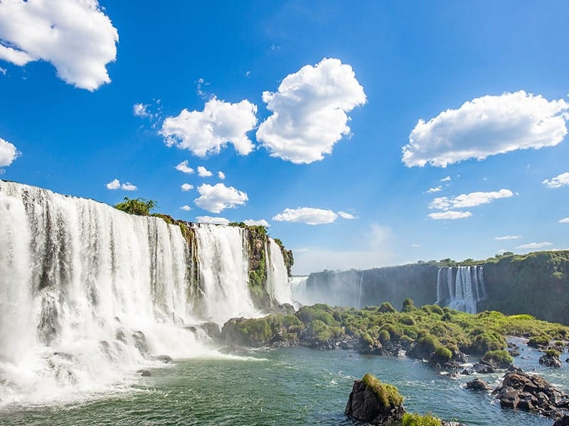

SEJAM BEM VINDOS AO MEU SITE
As Cataratas do Iguaçu ficam entre o Brasil e a Argentina, no rio Iguaçu. São formadas por aproximadamente 275 quedas-d'água e são conhecidas por sua beleza natural. São uma das Sete Maravilhas da Natureza e Patrimônio Natural da Humanidade.

importancia da cataratas
aAs Cataratas do Iguaçu são uma das maiores maravilhas naturais do mundo, localizadas entre o Brasil e a Argentina. Sua formação começou há milhões de anos, pela ação da água sobre as rochas vulcânicas. A região já era habitada por povos indígenas, principalmente Guarani e Kaingang. Em 1542, o espanhol Álvar Núñez Cabeza de Vaca foi o primeiro europeu a registrar as Cataratas. Em 1916, Santos Dumont visitou o local e ajudou a incentivar sua preservação. Em 1939, foi criado o Parque Nacional do Iguaçu. Em 1986, o parque foi reconhecido pela UNESCO como Patrimônio Natural da Humanidade. Em 2011, as Cataratas foram eleitas uma das Novas Sete Maravilhas da Natureza. Hoje, as Cataratas do Iguaçu são um símbolo da natureza, da história e da preservação ambiental.

importancia cultural
sao um simbolo da cultura paranaense pois representam a beleza e riqueza natural do parana, fazem parte do estado e sao motivo e orgulho para os paranaenes, alem de aproximarem diferentes culturas por estarem localizadas na regiao de fronteira entre brasil e argentina

curiosidades
curiosidade 2
As Cataratas do Iguaçu possuem cerca de 275 quedas-d'água. Sua maior queda é a Garganta do Diabo. Seu nome significa “água grande” e elas abrigam diversos animais e plantas. São uma das 7 Maravilhas da Natureza\! 🌊
patrimonio
A memória das Cataratas do Iguaçu representa sua história, desde os povos indígenas que habitavam a região até sua descoberta pelos europeus e sua preservação como patrimônio natural. Elas são um símbolo da natureza, da cultura e da história do Brasil e da Argentina.